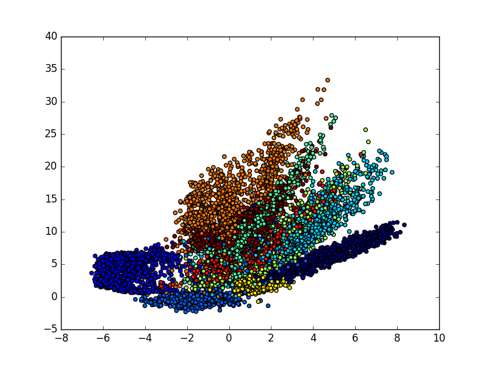

Autoencoder 自编码
作者: Alice 编辑: 莫烦 2016-10-30
学习资料:
- 代码链接
- 机器学习-简介系列 自编码 Autoencoder
自编码，简单来说就是把输入数据进行一个压缩和解压缩的过程。 原来有很多 Feature，压缩成几个来代表原来的数据，解压之后恢复成原来的维度，再和原数据进行比较。
它是一种非监督算法，只需要输入数据，解压缩之后的结果与原数据本身进行比较。
今天要做的事情是把 datasets.mnist 数据的 28×28＝784 维的数据，压缩成 2 维的数据，然后在一个二维空间中可视化出分类的效果。
导入模块并创建数据
数据仍然用 datasets.mnist。
import numpy as np
np.random.seed(1337) # for reproducibility
from keras.datasets import mnist
from keras.models import Model
from keras.layers import Dense, Input
import matplotlib.pyplot as plt
# download the mnist to the path '~/.keras/datasets/' if it is the first time to be called
# X shape (60,000 28x28), y shape (10,000, )
(x_train, _), (x_test, y_test) = mnist.load_data()
# data pre-processing
x_train = x_train.astype('float32') / 255. - 0.5 # minmax_normalized
x_test = x_test.astype('float32') / 255. - 0.5 # minmax_normalized
x_train = x_train.reshape((x_train.shape[0], -1))
x_test = x_test.reshape((x_test.shape[0], -1))
print(x_train.shape)
print(x_test.shape)
"""
(60000, 784)
(10000, 784)
"""
建立模型
encoding_dim，要压缩成的维度。
# in order to plot in a 2D figure
encoding_dim = 2
# this is our input placeholder
input_img = Input(shape=(784,))
接下来是建立 encoded 和 decoded ，再用 autoencoder 把二者组建在一起。训练时用 autoencoder。
encoded 用4层 Dense 全联接层，激活函数用 relu，输入的维度就是前一步定义的 input_img。
接下来定义下一层，它的输出维度是64，输入是上一层的输出结果。
在最后一层，我们定义它的输出维度就是想要的 encoding_dim＝2。
解压的环节，它的过程和压缩的过程是正好相反的。相对应层的激活函数也是一样的，不过在解压的最后一层用到的激活函数是 tanh。
因为输入值是由 -0.5 到 0.5 这个范围，在最后一层用这个激活函数的时候，它的输出是 -1 到 1，可以是作为一个很好的对应。
# encoder layers
encoded = Dense(128, activation='relu')(input_img)
encoded = Dense(64, activation='relu')(encoded)
encoded = Dense(10, activation='relu')(encoded)
encoder_output = Dense(encoding_dim)(encoded)
# decoder layers
decoded = Dense(10, activation='relu')(encoder_output)
decoded = Dense(64, activation='relu')(decoded)
decoded = Dense(128, activation='relu')(decoded)
decoded = Dense(784, activation='tanh')(decoded)
# construct the autoencoder model
autoencoder = Model(input=input_img, output=decoded)
接下来直接用 Model 这个模块来组建模型，输入就是图片，输出是解压的最后的结果。
# construct the encoder model for plotting
encoder = Model(input=input_img, output=encoder_output)
当我们想要看由 784 压缩到 2维后，这个结果是什么样的时候，也可以只单独组建压缩的板块，此时它的输入是图片，输出是压缩环节的最后结果。
激活模型
接下来是编译自编码这个模型，优化器用的是 adam，损失函数用的是 mse。
# compile autoencoder
autoencoder.compile(optimizer='adam', loss='mse')
训练模型
接下来训练自编码模型，注意它的输入和输出是一样的，都是训练集的 X。
# training
autoencoder.fit(x_train, x_train,
nb_epoch=20,
batch_size=256,
shuffle=True)
"""
Epoch 20/20
60000/60000 [==============================] - 7s - loss: 0.0398
"""
可视化结果
最后看到可视化的结果，自编码模型可以把这几个数字给区分开来，我们可以用自编码这个过程来作为一个特征压缩的方法，和PCA的功能一样，效果要比它好一些，因为它是非线性的结构。
# plotting
encoded_imgs = encoder.predict(x_test)
plt.scatter(encoded_imgs[:, 0], encoded_imgs[:, 1], c=y_test)
plt.colorbar()
plt.show()

如果你觉得这篇文章或视频对你的学习很有帮助, 请你也分享它, 让它能再次帮助到更多的需要学习的人. 莫烦没有正式的经济来源, 如果你也想支持 莫烦Python 并看到更好的教学内容, 赞助他一点点, 作为鼓励他继续开源的动力.